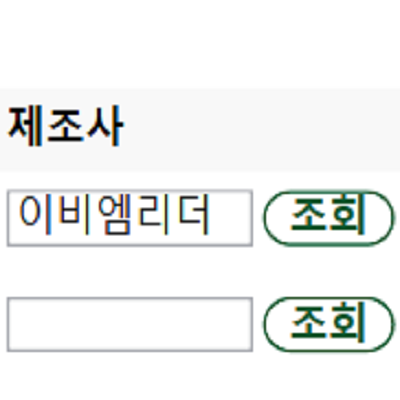

実装機能

|
自動的に値を選ぶ機能 自動的に製品名などの値をランダムに選びます。 |
|  |
自動的に値を入力する機能 自動的に名前、サイズなどの値をランダムに入れます。 |

|
自動的にデータベーステーブルを作る機能 これまでに取得したすべての値をまとめて自動的にSQLファイルを作成し、データベーステーブルを作成します。 |
背景と目的
「BuildGreen」会社で働いてプロジェクトに参加しました。
「BuildGreen」会社で働いてプロジェクトに参加しました。
学んだこと
- Pythonでpyautoguiでキーボードとマウスを操作する方法を学びました。
- Pythonでpyautogui、pyperclipでショートカットを押す方法を学びました。
- PythonでSQLファイルを作成する方法を学びました。
能力強化のために最も努力したこと
Pythonでキーボードとマウスを操縦
Pythonでキーボードとマウスを操縦
全体構造及び使用技術

- Python（Single Program）：自動化プログラムを実装しました。
開発環境
- Python 3.9 IDLE：自動化プログラムを実装するために使用しました。
追加の説明
- （実際にビジネスをしているので、ソースコードを公開できないこと、ご了承ください。）